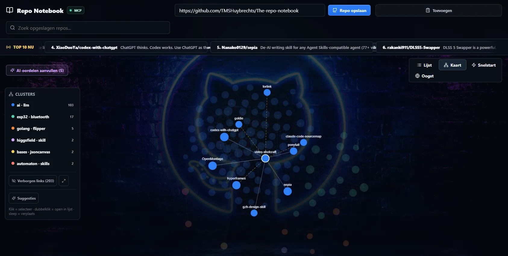
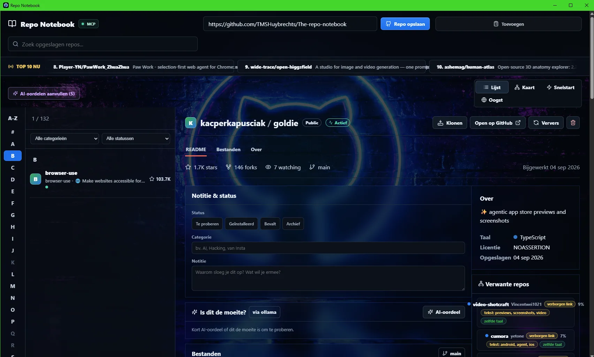
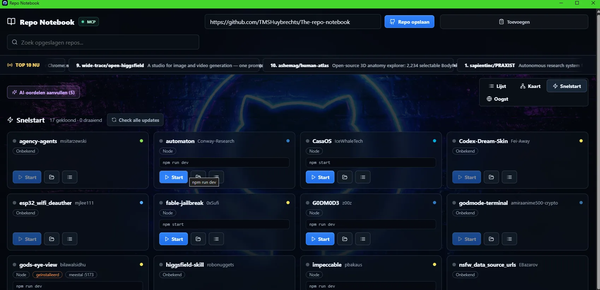
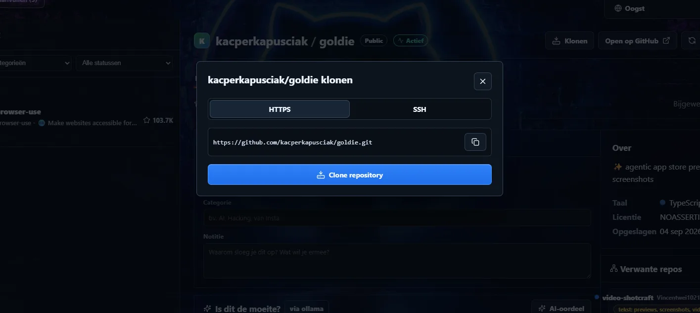
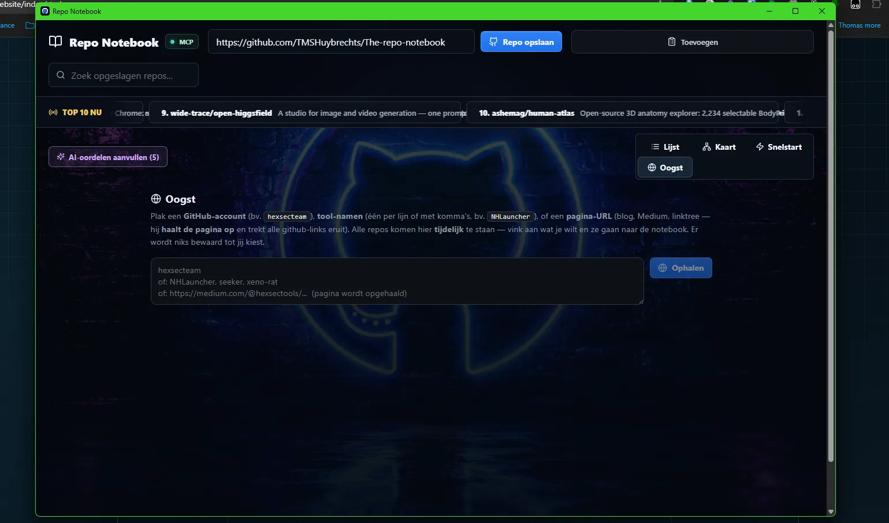

Less searching.
More making.
Repo Notebook brings repository discovery, AI judgement, related projects, graph mapping, cloning and local quickstart together in one control center.

01 / THE APP IN ACTION — REAL PRODUCT CAPTURE
Stop losing good repositories in a sea of tabs.
Save repos, browse trending projects, add your own categories and notes, and let AI help decide whether something is worth your time.
- Trending repo feed
- Personal categories + status
- AI score / judgement
- Stars, forks, language and activity
- Related repository suggestions

Your repository collection becomes a living graph.
Repositories are grouped into clusters so patterns become visible: AI tools, ESP32 projects, Flipper tooling, skills, automation and more.
Example collection shown in the screenshot
Paste a URL. Clone. Install. Watch it happen.
From GitHub to running locally, without command-line archaeology.
Clone a project, detect how it starts and launch supported projects directly from the notebook. Quickstart turns a saved repo into something you can actually use.
- Clone via HTTPS or SSH
- Project type detection
- Detected start commands
- Open project folders
- Update checks


Feed it a creator, tool or page. Harvest the repositories.
Paste a GitHub account, tool name or a page URL. Repo Notebook extracts repository links and lets you decide what belongs in your collection.

Built into HOL Guard. Your agent asks before it touches anything.
Repo Notebook's MCP server ships with HOL Guard from version 3.52.0, the open-source layer from Hashgraph Online that decides what AI coding agents may run. Turn it on, and your agent can browse your collection freely. Saving, cloning or removing a repository always waits for your approval.
GitHub stores repositories.
Repo Notebook stores context.
The goal is not another bookmark list. It is a working memory for developers, researchers and builders who constantly find useful code and want to understand, compare, classify and actually run it later.